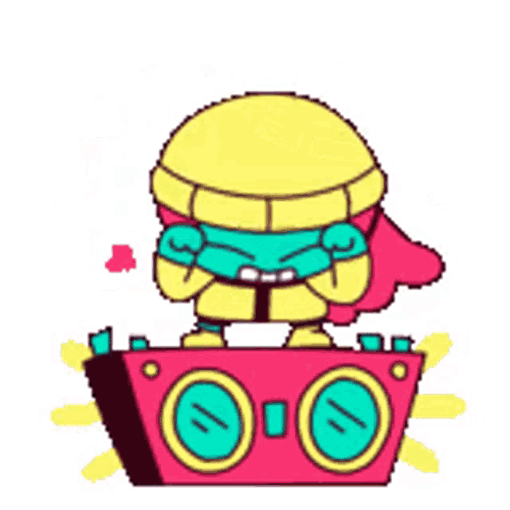

As festas de fim de ano, mais do que comemorações para trocar presentes e compartilhar almoços e ceias, representam momentos para reforçar a união familiar e a saúde emocional.
“Essas datas acabam estimulando a convivência mais próxima com pessoas de quem gostamos e com as quais, às vezes, não temos a oportunidade de ter mais contato ao longo do ano. Isso, claro, tem um aspecto bastante positivo”, diz Eduardo Calbucci, professor e um dos fundadores do Programa Semente.
Ele conta que pesquisas mostram que aquilo que mais ajuda a prever satisfação e felicidade é a qualidade das relações que nós somos capazes de estabelecer ao longo da vida, como as amizades que fazemos e a proximidade que mantemos com familiares.
Outro aspecto relacionado às celebrações de final de ano é a questão do fechamento de ciclos. Normalmente, essas comemorações, principalmente o Ano Novo, são um processo de renovação de expectativas e de esperanças.
Como diria Galvão Bueno:
Confira abaixo o que teremos:
Piscina

A piscina é o cenário perfeito para criar lembranças. De competições amigáveis a simples momentos de relaxamento, permita-se ficar até ficar enrugado de tanto se divertir à beira da água.
Venha se juntar a nós para um dia de diversão e frescor na piscina da nossa chácara. Mal podemos esperar para compartilhar risadas, brincadeiras e momentos incríveis com você e sua família!
Churrasco

Como sabemos, um dos momentos mais especiais para todos nós é quando nos reunimos em torno de uma boa comida e aproveitamos o tempo juntos. E o que poderia ser mais perfeito do que um delicioso churrasco?
Então, preparem-se, porque durante nossa viagem, vamos levar a tradição do churrasco conosco! Mal posso esperar para acender a churrasqueira, sentir o aroma irresistível da carne grelhando e desfrutar de momentos incríveis juntos.
Certifiquem-se de trazer o apetite e o bom humor, pois tenho certeza de que esses serão dias inesquecíveis cheios de risadas, conversas animadas e, é claro, comida deliciosa.
Festa Retrô

Durante nossa próxima viagem, vamos voltar no tempo e reviver as incríveis décadas de 60 a 90 com uma festa temática super divertida!
Estou organizando uma celebração que nos levará de volta aos icônicos anos do rock'n'roll, das discotecas e das roupas cheias de estilo. Preparem-se para mergulhar na nostalgia, porque teremos músicas que marcaram época, trajes incríveis e uma atmosfera contagiante que nos transportará para um passado cheio de boas lembranças.
Então, desenterraremos os vinis, colocaremos nossas melhores roupas vintage e nos prepararemos para dançar, rir e celebrar como se estivéssemos em uma festa dos anos dourados!
Mal posso esperar para ver todos vocês nesse clima festivo e criar memórias que durarão para sempre.
Futebol

Como sabemos, o futebol é mais do que um esporte, é uma paixão que nos une e cria momentos inesquecíveis.
Então, preparem-se para entrar em campo, vestir as cores do nosso time familiar e mostrar toda a habilidade (e, é claro, a competitividade saudável) que sempre nos acompanha. Será um dia repleto de dribles, gols emocionantes e, o mais importante, diversão em família.
Não importa se somos craques ou apenas jogadores de final de semana, o importante é participar e criar memórias incríveis juntos. E para quem prefere torcer, não se preocupe, sua animação nas arquibancadas é essencial!
Amigo Secreto
A ideia é simples e encantadora: cada membro sorteará o nome de um familiar e, com atenção e criatividade, selecionará um presente que reflita o carinho que nutrimos uns pelos outros.
A sugestão é mantermos o suspense até o momento propício durante as celebrações, quando revelaremos nossos Amigos Secretos. Estou confiante de que essa troca de presentes não apenas fortalecerá nossos laços familiares, mas também proporcionará momentos de alegria e, quem sabe, algumas surpresas inesquecíveis.
Fofocas
Segura a fofoca, galera fofoqueira, porque vem aí um tsunami de histórias! Pode preparar a língua, porque o show está prestes a começar, e vai ter enredo novo para dar e vender. Se antes era só um sussurro aqui e ali, agora é hora de soltar o verbo e esquentar os ânimos. A turma da fofoca vai ter trabalho dobrado, com tantas novidades pintando por aí. Então, já podem se animar, fofoqueiros de plantão, porque a diversão está garantida e as histórias estão chegando em doses generosas. Que a língua esteja afiada e a curiosidade a mil, porque a temporada de fofocas promete agitar geral. Bora lá, que a festa das histórias começou!
Músicas

Prepara o ouvido, porque as férias vão ser embaladas por um verdadeiro festival de músicas! Tem de tudo um pouco para todos os gostos. Se você curte um samba arretado, Raça Negra vai ser o trilha sonora perfeito para aquela tarde relax. Se a ideia é dar um toque sertanejo nas férias, Teodoro e Sampaio não podem faltar na playlist, embalando os momentos em família com suas canções marcantes. E não para por aí!
Tem espaço para todos os estilos, do pop animado ao rock clássico. Então, prepare-se para uma trilha sonora tão diversificada quanto as atividades. Que cada música seja como um pedacinho de tradição, uma lembrança ou mesmo uma descoberta musical. Com tanto som bom rolando, essas férias prometem ser um verdadeiro espetáculo musical. Então, sintoniza nessa vibe e deixa a música levar você para momentos inesquecíveis!
Se prepara que va ter muito MAIS...
Galera, segura a vibe porque as férias estão chegando com tudo! É hora de deixar o mau humor em casa e se preparar para uma overdose de diversão. Tem de tudo um pouco: praia, piscina, jogos, e a lista só cresce. Então, já sabe, né? Coloca o sorriso no rosto, esquece as preocupações e bora se jogar nesses dias que prometem ser épicos! Seja lá o que você curta, essas férias vão ter de sobra. Então, prepara o espírito aventureiro, porque a diversão está garantida. E não se esquece, cada momento é uma chance de fazer uma memória incrível. Então, vamos lá, família, é hora de fazer dessas férias um festival de risadas e histórias malucas. Que a diversão comece!